The Simmertones · band sites
Six concepts for the nine-piece Torbay ska band Glyn fronts. All of them use the research of 24 November 2026: the named line-up, the full Ten Feet Tall tracklist, and the confirmed live history.
Modern restyles
Three 2026 restyles. Each takes its technique from an award-winning artist site and keeps the ska heritage.
Two Tone
Strict black and white. The band name crosses a checkerboard, inverting square by square, and stretches as you scroll.
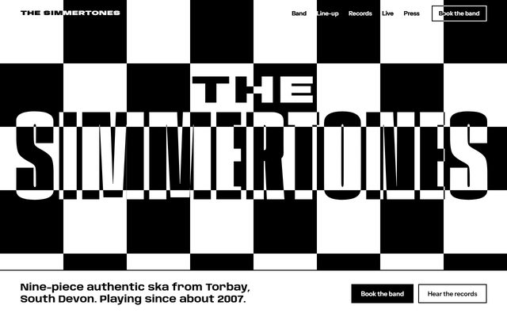
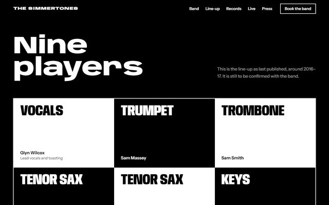
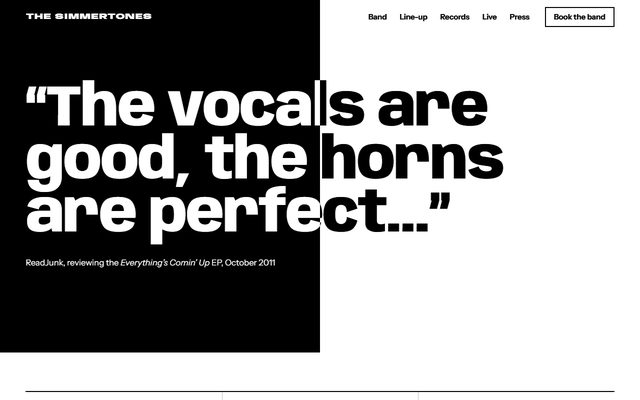
Toon Torbay
A toon-shaded 3D Torbay of beach huts, a bandstand and a festival field, built on a spinning 7" record that turns as you scroll.
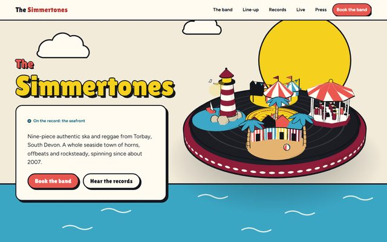
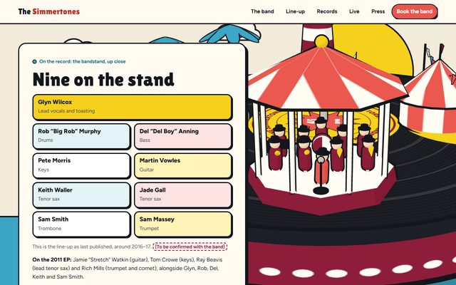
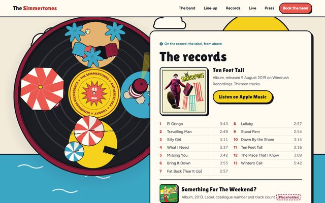
Windrush
The band's own label as a premium record shop, with 3D records you can spin and a crate to collect them.
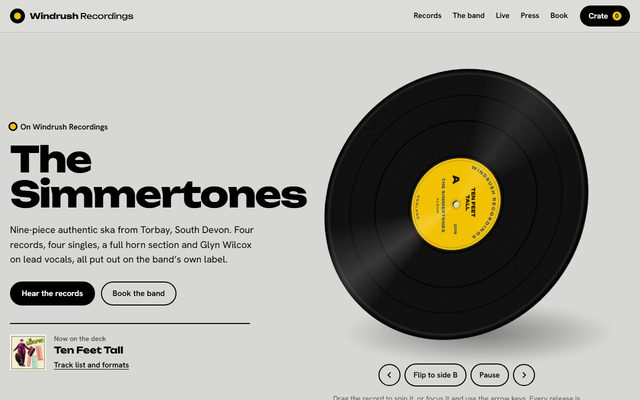
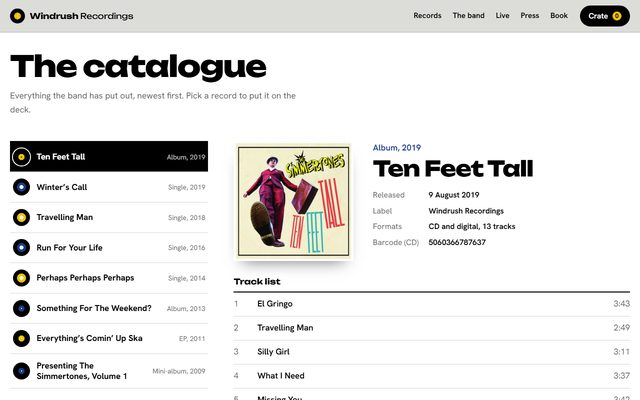
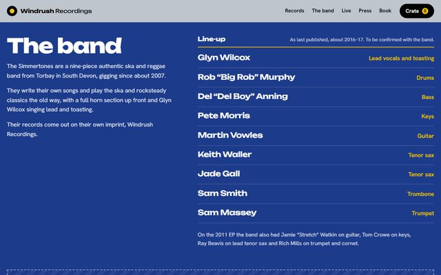
First round
The original three band concepts, updated with the new facts.
Something for the Weekend
A 1960s barbershop taken from their 2013 album cover, with gilt window lettering, a turning barber pole and a felt letterboard for gigs.
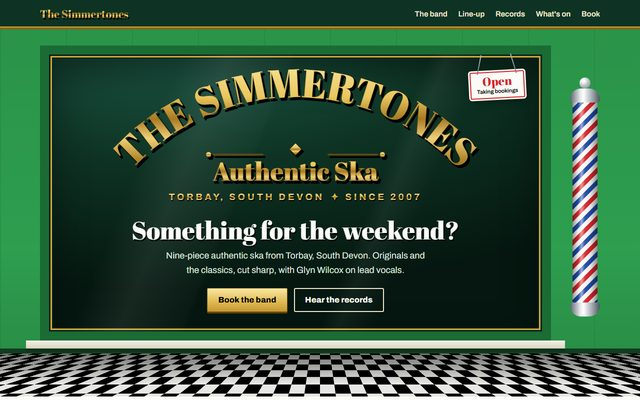
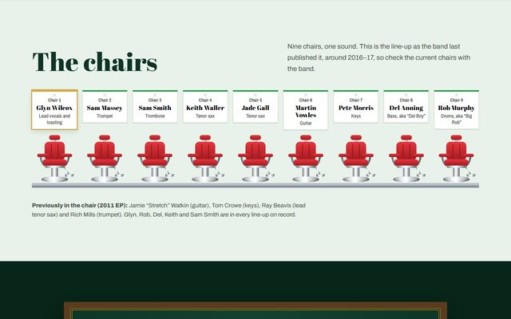
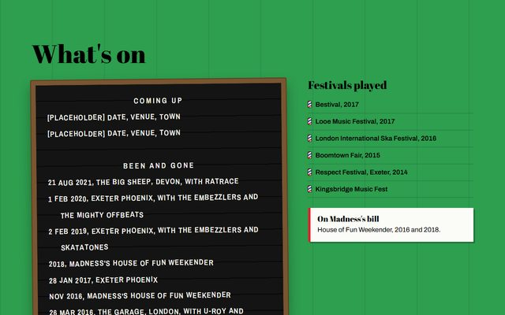
Main Stage
A cobalt festival identity built for promoters, with a rider-style fact sheet, an interactive stage plot and a copy-ready bio.
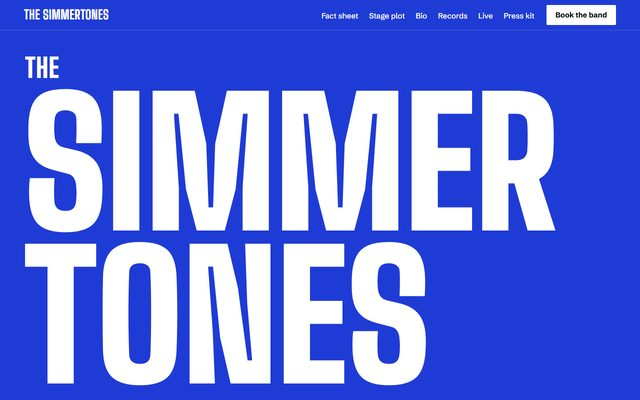
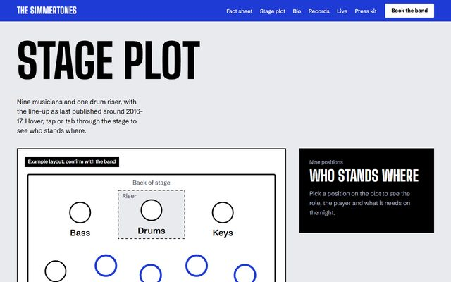
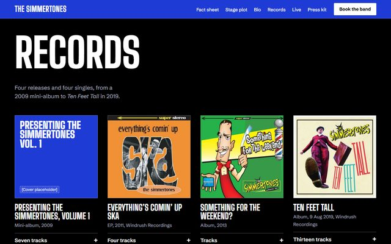
Master Tape
The band as a recording session: a nine-channel mixing desk, tape boxes with track sheets, and a take log.
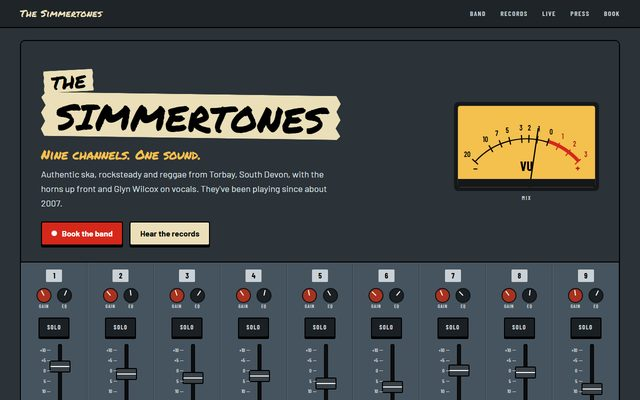
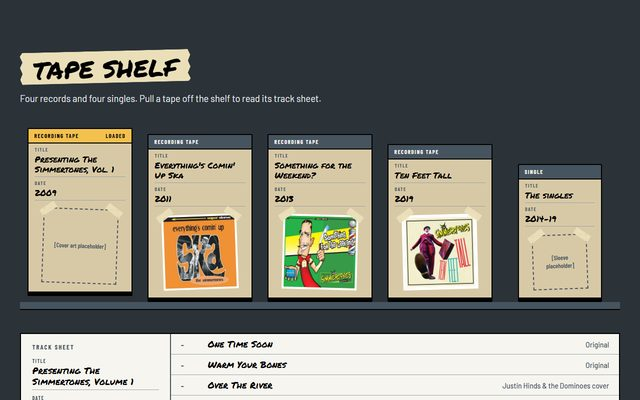
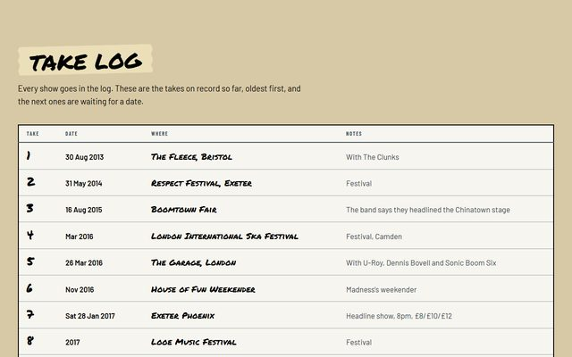